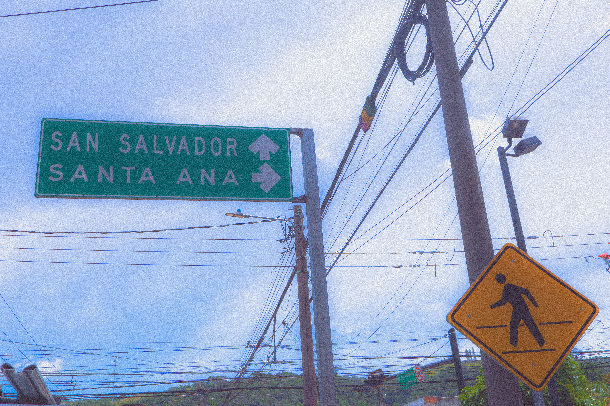
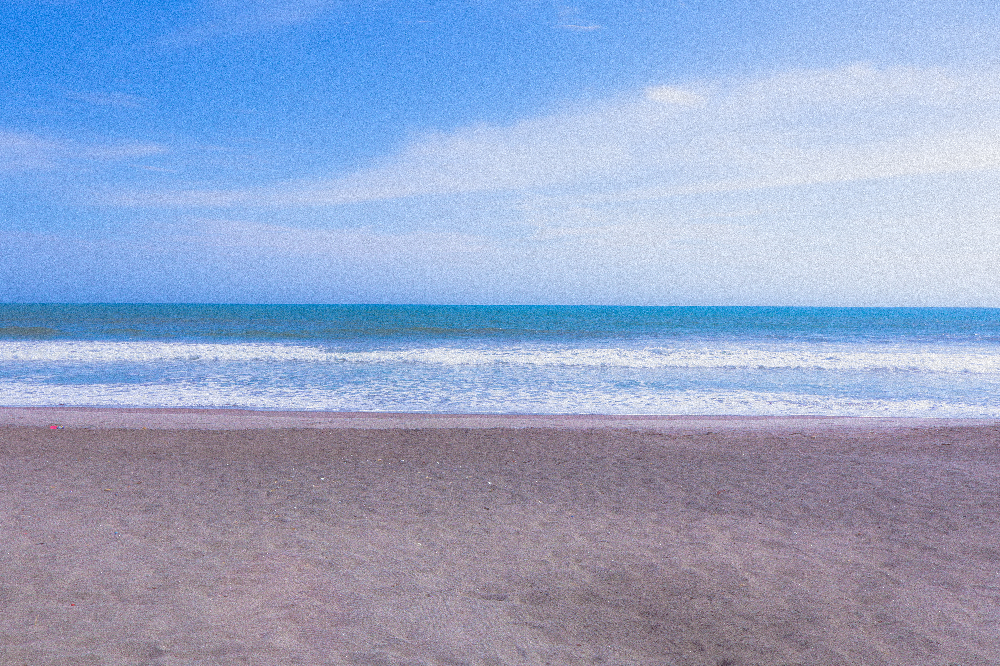
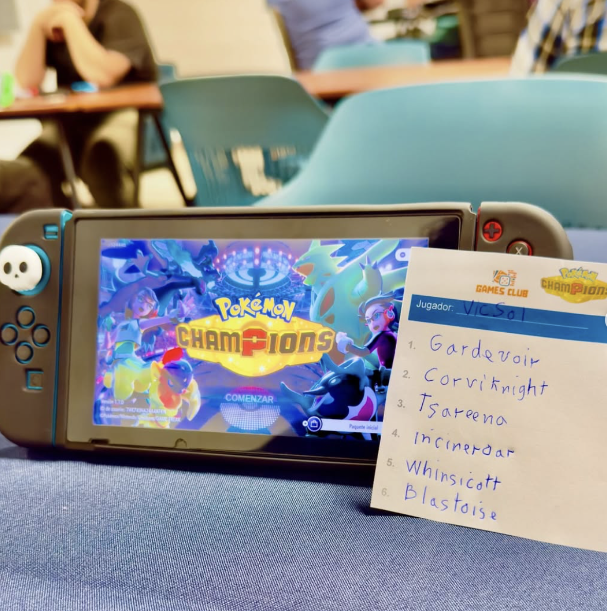
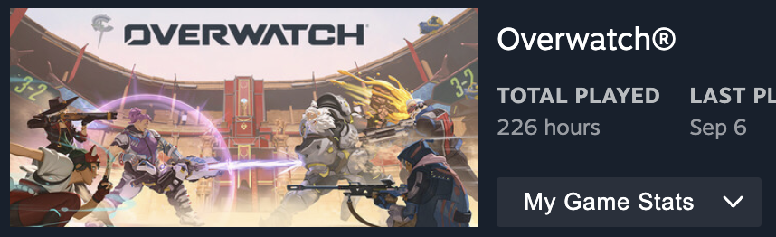
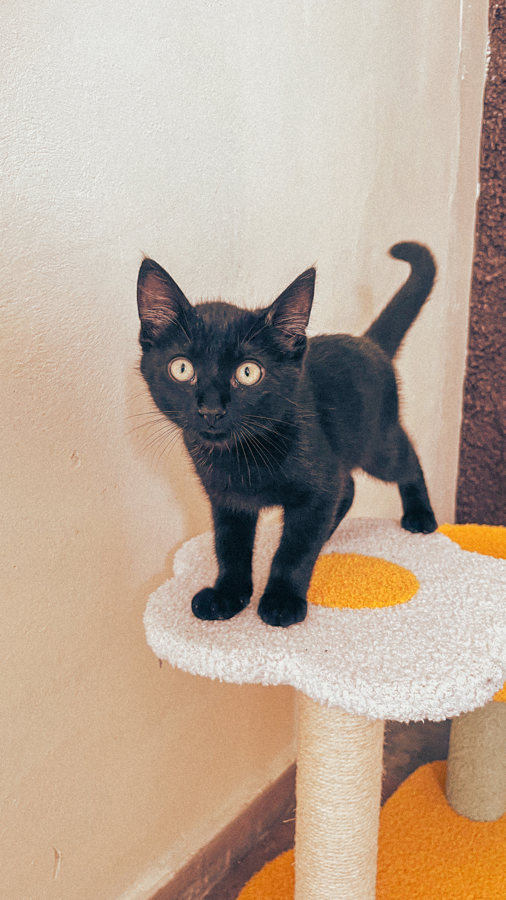
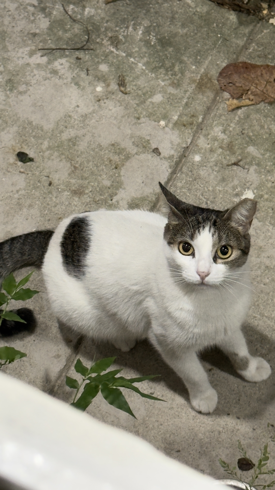
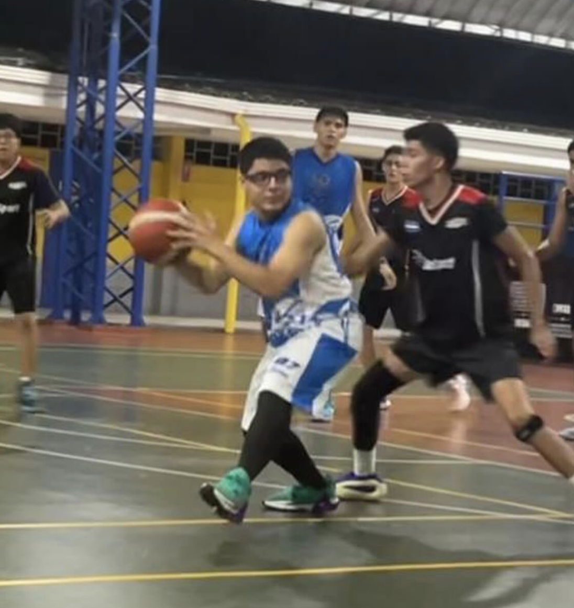
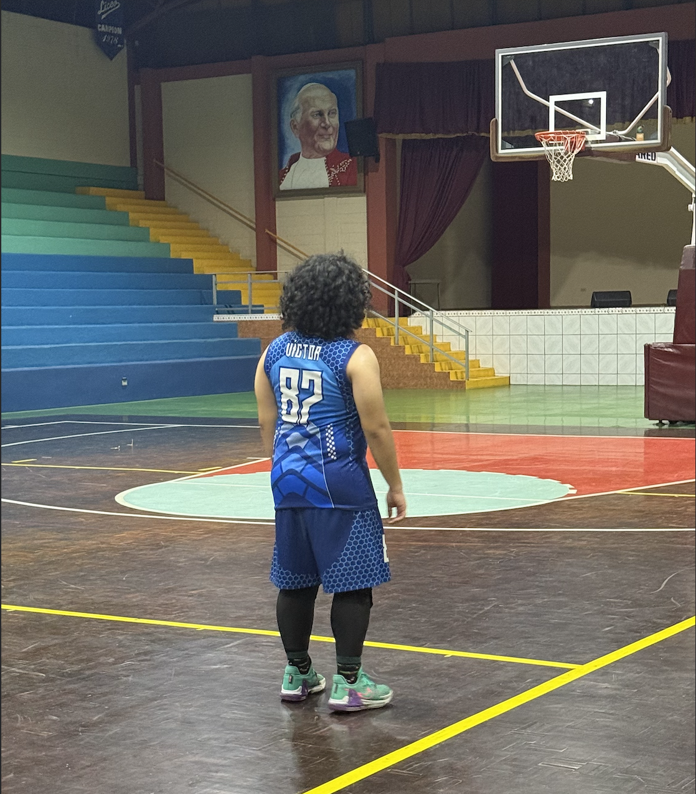

The Amazing Digital Circus Fan Page
Página web realizada para una tarea de la materia Desarrollo Web I. Visitar The Amazing Digital Circus Fanpage
¡Hola! Soy Víctor Alejandro Solano Ramírez. Me gradué del Liceo Salvadoreño en 2024 y actualmente estudio Ingeniería de Software y Negocios Digitales en la ESEN.
Me apasiona la tecnología, la programación y la personalización de hardware. ¡Muy orgulloso de la potencia de mi setup con mi monitor ultrawide curvo y mi RTX 3060!
Página web realizada para una tarea de la materia Desarrollo Web I. Visitar The Amazing Digital Circus Fanpage
Llevo mi cámara a todos lados para inmortalizar la esencia de cada paisaje y objeto. Lightroom y Snapseed son mis mejores aliados para el retoque final.


Estudiar las sinergias, IVs y EVs para los torneos de VGC me relaja tanto como mantener vivo a mi equipo en Overwatch.


Me encanta cuidar de mis gatos. Panterita es un gato que rescatamos recientemente (agosto de 2026) y Panchita es una gatita feral que llega a comer a mi casa desde 2023.


Fui parte del equipo de basquetball de mi colegio durante mis últimos tres años. Actualmente, sigo jugando cada que hacen torneos de promociones de exalumnos junto al equipo actual. Mi dorsal actual es el 87, en referencia al videojuego Five nights at Freddy's.

